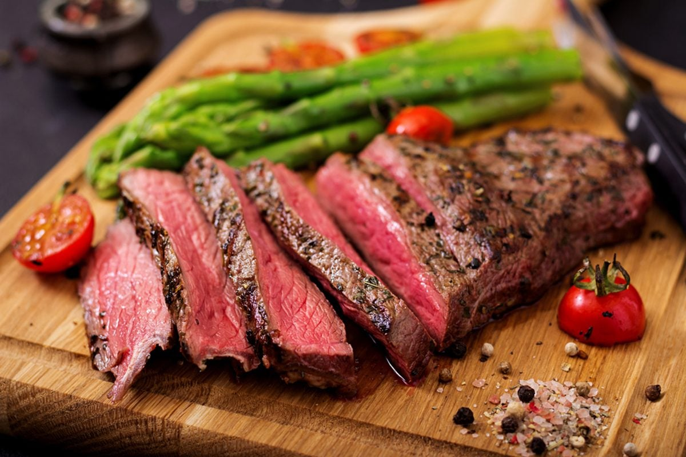

Beef Steak Recipe
Home

Desctription
A medium-rare steak is the ultimate beef experience – perfectly seared with a deep,
flavorful, crispy brown crust on the outside, and a warm, juicy, bright pink center.
The meat is quickly cooked over high heat and basted with garlic and rosemary butter at the end for maximum richness.
Ingredients
- 1 thick beef steak (ribeye, striploin, or filet mignon, at least 2.5–3 cm thick)
- 2 tablespoons of high-smoke point oil (canola or refined olive oil)
- 2 tablespoons of butter
- 2 cloves of garlic
- 2 sprigs of fresh rosemary
- 2 sprigs of fresh thyme
- A pinch of coarse sea salt
- A pinch of freshly ground black pepper
Steps
- Bringing to room temp: Take the steak out of the fridge 30-45 minutes before cooking so it reaches room temperature.
- Drying and seasoning: Pat the steak completely dry with paper towels, then season generously with coarse salt on all sides right before cooking.
- Heating the pan: Heat a heavy skillet (preferably cast-iron) over high heat, add the oil, and wait until it starts to smoke slightly.
- Searing (Side 1): Place the steak in the hot pan and sear without moving it for 2 minutes to build a rich, brown crust.
- Searing (Side 2): Flip the steak over and sear the other side for another 1.5 to 2 minutes.
- Basting (Adding aromatics): Lower the heat to medium, then add the butter, crushed garlic cloves, and fresh herbs to the pan. Tilt the pan slightly and use a spoon to continuously pour the melted, foaming butter over the steak for 1 minute.
- Checking internal temp: If you have a meat thermometer, the center of the steak should read 52–54°C at this point.
- Resting the meat: Remove the steak from the pan and place it on a board or warm plate. Season with black pepper and let it rest for 5-8 minutes before slicing so the juices redistribute evenly.